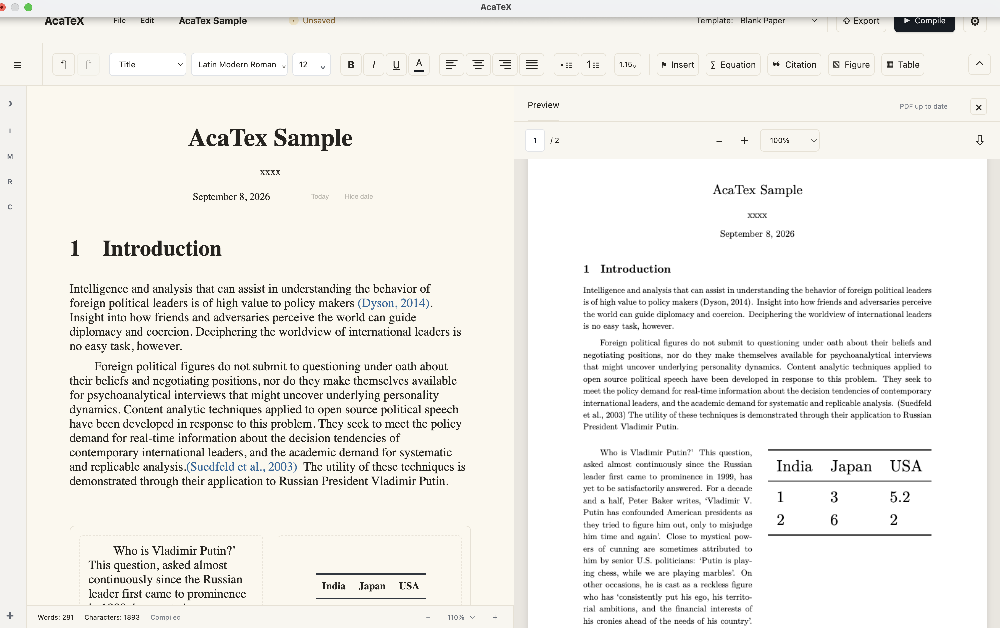

\section{Theory}
\textcite{fearon1995}
\begin{equation}AcaTex
Write visually. Typeset with LaTeX.
A visual, structured academic writing environment powered by LaTeX.
Public Preview v0.2 · macOS · Apple Silicon

01
Write, don’t code
Work with the ideas on the page. AcaTex keeps the LaTeX precise and out of your way.
Theory
1y = α + βx + ε
02
Your paper has structure
Navigate arguments, evidence, citations, and outputs as one coherent document.
I
IntroductionResearch QuestionWendt (1992)
II
TheoryEquation 1
III
DataFigure 1
IV
ResultsTable 1
03
Structured layouts
Compose text, figures, and tables in balanced, publication-ready columns.
Σ
04
Academic writing tools
∑Equations
“Citations
¹Footnotes
▧Figures
▦Tables
TTemplates
05
LaTeX underneath
A visual workflow with a durable, portable typesetting system at its core.
Visual Editor→Structured Document→LaTeX→PDF
06
Chinese & English
Write in English, Simplified Chinese, or both—within the same structured document.
English简体中文中英混排
07
Local-first
Your writing workflow can stay on your Mac, from the first sentence to the final PDF.
- Writing
- Tectonic compilation
- Bibliography processing
- PDF generation
The paper is yours. The typesetting is handled.
AcaTex public preview is available for Apple Silicon Macs.
Download for macOS